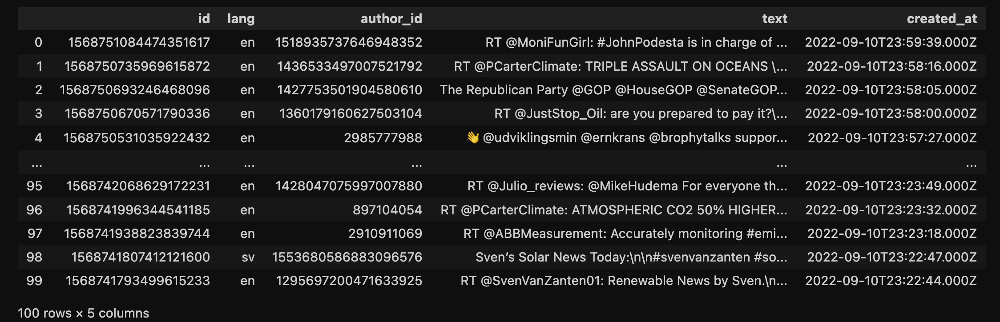

Twitter Data- The Dataset from Twitter collected by Python API. Getting Data with Query with Climatchange from the most recent 100 tweets. Collect the data in JSON format
The Twitter API provides different chocies of fields, and we use tweetid, language, author_id, text, created_at:

R Code
Twitter Data- The Dataset from Twitter collected by R API. Getting Data with Query with CLIMATECHANGE from the most recent 100 tweets. Collect the data in CSV format
The Twitter API provides different chocies of fields, and we use created_at, lang, conversation_id: